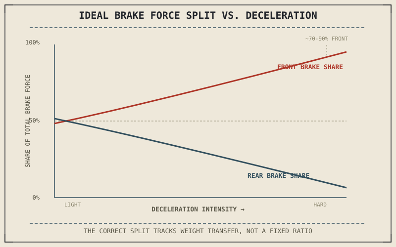

Roughly 70 percent of a motorcycle's total stopping force typically comes from the front brake under hard braking, and that number isn't a rule of thumb picked for convenience — it falls directly out of the weight-transfer physics Chapter 7.5 just established. Brake balance is the practical answer to a question that chapter left open: given that grip keeps shifting between front and rear as a stop unfolds, how should braking force actually be split between them?
Chapter 7.5 closed by naming brake balance as the next subject after weight transfer. This chapter is that subject.
Why the Split Isn't Fixed
Because weight transfer described in Chapter 7.5 grows with deceleration intensity, the ideal front-rear brake split also grows with deceleration intensity — gentle braking barely shifts weight forward, so a much more even front-rear split remains genuinely effective and appropriate, while hard braking demands progressively more front brake and progressively less rear as available rear grip shrinks. There is no single correct percentage that applies at every deceleration level; brake balance is properly understood as a continuously shifting target, and both rider technique and vehicle hardware exist specifically to track that shifting target as closely as practical.
How Riders Manage It
In practice, this is why braking technique emphasizes progressively increasing front brake pressure as a stop develops — starting a hard stop with maximum front brake force immediately, before weight transfer has actually happened, risks demanding more front grip than is yet available, while easing into it as the front tyre's load and grip build lets the rider use nearly all of what Chapter 7.5 explained becomes available. Trail braking into a corner, briefly touched on in Chapter 6.4's friction circle discussion, applies this same balancing act while cornering force is also drawing on the same tyre's shared grip budget, which is why it demands more precision than braking upright in a straight line.
There's no single correct front-rear brake split — the correct proportion grows with deceleration intensity, tracking the same weight transfer that's simultaneously growing the front tyre's grip and shrinking the rear's.

A graph showing ideal front brake force proportion rising and rear brake force proportion falling as deceleration intensity increases, tracking the weight transfer curve from light to hard braking.
How Hardware Manages It
Chapter 7.4 introduced linked and combined braking systems as a hardware approach to this same balancing problem, using valving to automatically apply a calculated proportion of front and sometimes rear force regardless of exactly how the rider's inputs are split between the two levers. More advanced systems can even adjust that proportion based on measured deceleration or wheel speed in real time, approximating the continuously shifting ideal split this chapter has described far more precisely than a fixed mechanical valve alone could manage. None of this hardware eliminates the underlying physics — it's simply automating the same weight-transfer-tracking job a skilled rider does manually.
A Common Misconception, Cleared Up Early
It's a persistent myth, especially among newer riders, that using the front brake hard is inherently dangerous and the rear brake is the "safer" one to rely on. Chapter 7.5 already showed why this is backwards under any meaningfully hard stop: weight transfer gives the front tyre most of the available grip precisely when it's needed most, while the lightly loaded rear tyre becomes the wheel that's actually easiest to lock. Front-brake caution has some truth at very low speed or on a slippery surface, where weight transfer is minimal and front-wheel lock has less warning, but as a general braking principle it gets the physics backwards rather than merely oversimplifying it.
Where This Leads
Brake balance explains how much force should go where, but a rider or a hardware system can still get it wrong under panic or unexpected surface conditions, locking a wheel despite everything this part has explained. Chapter 7.7 closes this part by covering ABS — the system built specifically to catch that mistake — and by placing braking back into the whole motorcycle system.
Key Concepts to Remember
- The ideal front-rear brake split isn't fixed — it grows more front-weighted as deceleration intensity increases, tracking weight transfer.
- Progressive front brake application lets a rider use grip as it becomes available through weight transfer, rather than demanding it before it exists.
- Linked and advanced combined braking systems automate this same balance-tracking job using valving or real-time deceleration and wheel-speed data.
- Under meaningfully hard braking, the front tyre is the one with more available grip, and the lightly loaded rear becomes the easier wheel to lock.
Cross-References
| ← Ch. 7.5 | Established weight transfer as the physical basis for shifting grip; this chapter turns that shift into an actual brake-proportioning answer. |
| ← Ch. 7.4 | Introduced linked and combined braking systems; this chapter explains the specific balancing problem those systems are engineered to solve. |
| ← Ch. 6.4 | Introduced the friction circle and trail-braking's shared grip demand; this chapter extends that idea to the added complexity of front-rear balance. |
| → Ch. 7.7 | Closes Part VII by covering ABS and placing braking back into the whole motorcycle system. |